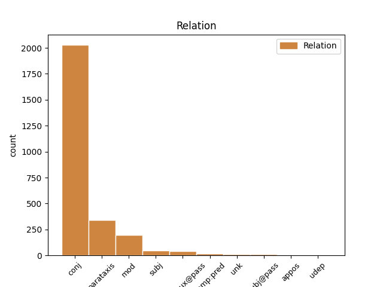
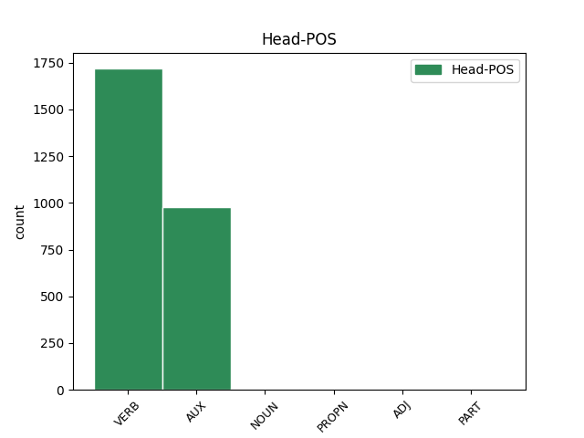
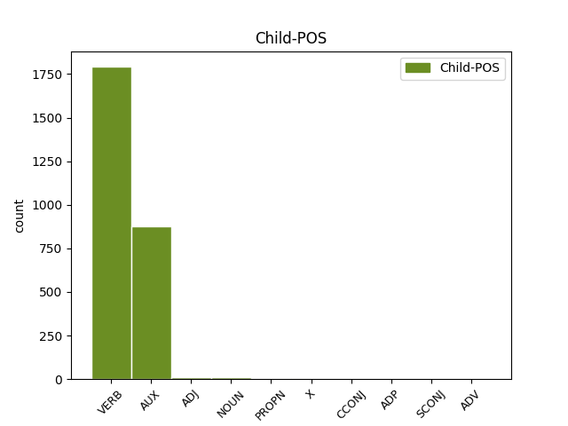

Distribution of features within this leaf



Agreement Rules sorted by frequency.
- When the dependent token is the conjunct(conj) of the head token,
1 Davidsson _ _ _ _ 0 _ _ _
2 promovierte promovieren VERB VVFIN Mood=Ind|Number=Sing|Person=3|Tense=Past|VerbForm=Fin 0 _ _ _
3 1991 _ _ _ _ 0 _ _ _
4 mit _ _ _ _ 0 _ _ _
5 einer _ _ _ _ 0 _ _ _
6 Arbeit _ _ _ _ 0 _ _ _
7 über _ _ _ _ 0 _ _ _
8 Matthias _ _ _ _ 0 _ _ _
9 Weckmann _ _ _ _ 0 _ _ _
10 und _ _ _ _ 0 _ _ _
11 war sein AUX VAFIN Mood=Ind|Number=Sing|Person=3|Tense=Past|VerbForm=Fin 2 conj _ _
12 dadurch _ _ _ _ 0 _ _ _
13 der _ _ _ _ 0 _ _ _
14 erste _ _ _ _ 0 _ _ _
15 Absolvent _ _ _ _ 0 _ _ _
16 eines _ _ _ _ 0 _ _ _
17 wissenschaftlich _ _ _ _ 0 _ _ _
18 - _ _ _ _ 0 _ _ _
19 künstlerischen _ _ _ _ 0 _ _ _
20 Studiums _ _ _ _ 0 _ _ _
21 in _ _ _ _ 0 _ _ _
22 Schweden _ _ _ _ 0 _ _ _
23 . _ _ _ _ 0 _ _ _
1 Wie _ _ _ _ 0 _ _ _
2 sehr _ _ _ _ 0 _ _ _
3 sie _ _ _ _ 0 _ _ _
4 dem _ _ _ _ 0 _ _ _
5 Jungen _ _ _ _ 0 _ _ _
6 aber _ _ _ _ 0 _ _ _
7 fehlte _ _ _ _ 0 _ _ _
8 , _ _ _ _ 0 _ _ _
9 zeigt zeigen VERB VVFIN Mood=Ind|Number=Sing|Person=3|Tense=Pres|VerbForm=Fin 0 _ _ _
10 sich _ _ _ _ 0 _ _ _
11 in _ _ _ _ 0 _ _ _
12 seiner _ _ _ _ 0 _ _ _
13 Geborgenheitssuche _ _ _ _ 0 _ _ _
14 in _ _ _ _ 0 _ _ _
15 der _ _ _ _ 0 _ _ _
16 Natur _ _ _ _ 0 _ _ _
17 , _ _ _ _ 0 _ _ _
18 aber _ _ _ _ 0 _ _ _
19 auch _ _ _ _ 0 _ _ _
20 an _ _ _ _ 0 _ _ _
21 dem _ _ _ _ 0 _ _ _
22 Tag _ _ _ _ 0 _ _ _
23 der _ _ _ _ 0 _ _ _
24 Aufnahme _ _ _ _ 0 _ _ _
25 in _ _ _ _ 0 _ _ _
26 das _ _ _ _ 0 _ _ _
27 Seminar _ _ _ _ 0 _ _ _
28 : _ _ _ _ 0 _ _ _
29 " _ _ _ _ 0 _ _ _
30 Wer _ _ _ _ 0 _ _ _
31 bei _ _ _ _ 0 _ _ _
32 dem _ _ _ _ 0 _ _ _
33 Eintritt _ _ _ _ 0 _ _ _
34 in _ _ _ _ 0 _ _ _
35 das _ _ _ _ 0 _ _ _
36 Klosterseminar _ _ _ _ 0 _ _ _
37 noch _ _ _ _ 0 _ _ _
38 eine _ _ _ _ 0 _ _ _
39 Mutter _ _ _ _ 0 _ _ _
40 gehabt _ _ _ _ 0 _ _ _
41 hat _ _ _ _ 0 _ _ _
42 , _ _ _ _ 0 _ _ _
43 der _ _ _ _ 0 _ _ _
44 denkt denken VERB VVFIN Mood=Ind|Number=Sing|Person=3|Tense=Pres|VerbForm=Fin 9 parataxis _ _
45 zeitlebens _ _ _ _ 0 _ _ _
46 an _ _ _ _ 0 _ _ _
47 jene _ _ _ _ 0 _ _ _
48 Tage _ _ _ _ 0 _ _ _
49 mit _ _ _ _ 0 _ _ _
50 Dankbarkeit _ _ _ _ 0 _ _ _
51 und _ _ _ _ 0 _ _ _
52 lächelnder _ _ _ _ 0 _ _ _
53 Rührung _ _ _ _ 0 _ _ _
54 . _ _ _ _ 0 _ _ _
1 Wird werden AUX VAFIN Mood=Ind|Number=Sing|Person=3|Tense=Pres|VerbForm=Fin 5 mod _ _
2 dieser _ _ _ _ 0 _ _ _
3 freigegeben _ _ _ _ 0 _ _ _
4 , _ _ _ _ 0 _ _ _
5 überträgt übertragen VERB VVFIN Mood=Ind|Number=Sing|Person=3|Tense=Pres|VerbForm=Fin 0 _ _ _
6 er _ _ _ _ 0 _ _ _
7 die _ _ _ _ 0 _ _ _
8 Energie _ _ _ _ 0 _ _ _
9 einer _ _ _ _ 0 _ _ _
10 " _ _ _ _ 0 _ _ _
11 frei _ _ _ _ 0 _ _ _
12 schwebenden _ _ _ _ 0 _ _ _
13 " _ _ _ _ 0 _ _ _
14 Feder _ _ _ _ 0 _ _ _
15 auf _ _ _ _ 0 _ _ _
16 den _ _ _ _ 0 _ _ _
17 Schlagbolzen _ _ _ _ 0 _ _ _
18 . _ _ _ _ 0 _ _ _
1 Wie _ _ _ _ 0 _ _ _
2 sehr _ _ _ _ 0 _ _ _
3 sie _ _ _ _ 0 _ _ _
4 dem _ _ _ _ 0 _ _ _
5 Jungen _ _ _ _ 0 _ _ _
6 aber _ _ _ _ 0 _ _ _
7 fehlte _ _ _ _ 0 _ _ _
8 , _ _ _ _ 0 _ _ _
9 zeigt _ _ _ _ 0 _ _ _
10 sich _ _ _ _ 0 _ _ _
11 in _ _ _ _ 0 _ _ _
12 seiner _ _ _ _ 0 _ _ _
13 Geborgenheitssuche _ _ _ _ 0 _ _ _
14 in _ _ _ _ 0 _ _ _
15 der _ _ _ _ 0 _ _ _
16 Natur _ _ _ _ 0 _ _ _
17 , _ _ _ _ 0 _ _ _
18 aber _ _ _ _ 0 _ _ _
19 auch _ _ _ _ 0 _ _ _
20 an _ _ _ _ 0 _ _ _
21 dem _ _ _ _ 0 _ _ _
22 Tag _ _ _ _ 0 _ _ _
23 der _ _ _ _ 0 _ _ _
24 Aufnahme _ _ _ _ 0 _ _ _
25 in _ _ _ _ 0 _ _ _
26 das _ _ _ _ 0 _ _ _
27 Seminar _ _ _ _ 0 _ _ _
28 : _ _ _ _ 0 _ _ _
29 " _ _ _ _ 0 _ _ _
30 Wer _ _ _ _ 0 _ _ _
31 bei _ _ _ _ 0 _ _ _
32 dem _ _ _ _ 0 _ _ _
33 Eintritt _ _ _ _ 0 _ _ _
34 in _ _ _ _ 0 _ _ _
35 das _ _ _ _ 0 _ _ _
36 Klosterseminar _ _ _ _ 0 _ _ _
37 noch _ _ _ _ 0 _ _ _
38 eine _ _ _ _ 0 _ _ _
39 Mutter _ _ _ _ 0 _ _ _
40 gehabt _ _ _ _ 0 _ _ _
41 hat haben AUX VAFIN Mood=Ind|Number=Sing|Person=3|Tense=Pres|VerbForm=Fin 44 subj _ SpaceAfter=No
42 , _ _ _ _ 0 _ _ _
43 der _ _ _ _ 0 _ _ _
44 denkt denken VERB VVFIN Mood=Ind|Number=Sing|Person=3|Tense=Pres|VerbForm=Fin 0 _ _ _
45 zeitlebens _ _ _ _ 0 _ _ _
46 an _ _ _ _ 0 _ _ _
47 jene _ _ _ _ 0 _ _ _
48 Tage _ _ _ _ 0 _ _ _
49 mit _ _ _ _ 0 _ _ _
50 Dankbarkeit _ _ _ _ 0 _ _ _
51 und _ _ _ _ 0 _ _ _
52 lächelnder _ _ _ _ 0 _ _ _
53 Rührung _ _ _ _ 0 _ _ _
54 . _ _ _ _ 0 _ _ _
1 Desgleichen _ _ _ _ 0 _ _ _
2 wurden werden AUX VAFIN Mood=Ind|Number=Plur|Person=3|Tense=Past|VerbForm=Fin|Voice=Pass 0 _ _ _
3 in _ _ _ _ 0 _ _ _
4 kurzen _ _ _ _ 0 _ _ _
5 Abständen _ _ _ _ 0 _ _ _
6 in _ _ _ _ 0 _ _ _
7 den _ _ _ _ 0 _ _ _
8 verschiedenen _ _ _ _ 0 _ _ _
9 Siedlungsteilen _ _ _ _ 0 _ _ _
10 ( _ _ _ _ 0 _ _ _
11 Alt _ _ _ _ 0 _ _ _
12 - _ _ _ _ 0 _ _ _
13 ) _ _ _ _ 0 _ _ _
14 Lichtenberg _ _ _ _ 0 _ _ _
15 , _ _ _ _ 0 _ _ _
16 Karlshorst _ _ _ _ 0 _ _ _
17 und _ _ _ _ 0 _ _ _
18 Wilhelmsberg _ _ _ _ 0 _ _ _
19 ( _ _ _ _ 0 _ _ _
20 heute _ _ _ _ 0 _ _ _
21 Fennpfuhl _ _ _ _ 0 _ _ _
22 ) _ _ _ _ 0 _ _ _
23 neue _ _ _ _ 0 _ _ _
24 Schulgebäude _ _ _ _ 0 _ _ _
25 fertiggestellt fertigstellen VERB VVPP Mood=Ind|Number=Sing|Person=3|Tense=Pres|VerbForm=Fin 2 comp:aux@pass _ SpaceAfter=No
26 . _ _ _ _ 0 _ _ _
1 Weiter _ _ _ _ 0 _ _ _
2 war sein AUX VAFIN Mood=Ind|Number=Sing|Person=3|Tense=Past|VerbForm=Fin 0 _ _ _
3 er _ _ _ _ 0 _ _ _
4 als _ _ _ _ 0 _ _ _
5 Gesandter _ _ _ _ 0 _ _ _
6 beteiligt beteiligen ADJ VVFIN Mood=Ind|Number=Sing|Person=3|Tense=Pres|VerbForm=Fin 2 comp:pred _ _
7 an _ _ _ _ 0 _ _ _
8 den _ _ _ _ 0 _ _ _
9 Verhandlungen _ _ _ _ 0 _ _ _
10 in _ _ _ _ 0 _ _ _
11 dem _ _ _ _ 0 _ _ _
12 Zusammenhang _ _ _ _ 0 _ _ _
13 mit _ _ _ _ 0 _ _ _
14 dem _ _ _ _ 0 _ _ _
15 Schonischen _ _ _ _ 0 _ _ _
16 Krieg _ _ _ _ 0 _ _ _
17 zwischen _ _ _ _ 0 _ _ _
18 Dänemark _ _ _ _ 0 _ _ _
19 und _ _ _ _ 0 _ _ _
20 Schweden _ _ _ _ 0 _ _ _
21 sowie _ _ _ _ 0 _ _ _
22 an _ _ _ _ 0 _ _ _
23 der _ _ _ _ 0 _ _ _
24 Rückgabe _ _ _ _ 0 _ _ _
25 der _ _ _ _ 0 _ _ _
26 als _ _ _ _ 0 _ _ _
27 Pfand _ _ _ _ 0 _ _ _
28 in _ _ _ _ 0 _ _ _
29 Lübecker _ _ _ _ 0 _ _ _
30 Besitz _ _ _ _ 0 _ _ _
31 befindlichen _ _ _ _ 0 _ _ _
32 Stadt _ _ _ _ 0 _ _ _
33 Mölln _ _ _ _ 0 _ _ _
34 an _ _ _ _ 0 _ _ _
35 das _ _ _ _ 0 _ _ _
36 Herzogtum _ _ _ _ 0 _ _ _
37 Sachsen _ _ _ _ 0 _ _ _
38 - _ _ _ _ 0 _ _ _
39 Lauenburg _ _ _ _ 0 _ _ _
40 . _ _ _ _ 0 _ _ _
1 Er _ _ _ _ 0 _ _ _
2 war sein VERB VAFIN Mood=Ind|Number=Sing|Person=3|Tense=Past|VerbForm=Fin 3 unk _ _
3 gehörte gehört VERB VVFIN Mood=Ind|Number=Sing|Person=3|Tense=Past|VerbForm=Fin 0 _ _ _
4 dem _ _ _ _ 0 _ _ _
5 Ritterstand _ _ _ _ 0 _ _ _
6 ( _ _ _ _ 0 _ _ _
7 miles _ _ _ _ 0 _ _ _
8 ) _ _ _ _ 0 _ _ _
9 an _ _ _ _ 0 _ _ _
10 . _ _ _ _ 0 _ _ _
1 Es _ _ _ _ 0 _ _ _
2 müsse müssen AUX VMFIN Mood=Sub|Number=Sing|Person=3|Tense=Pres|VerbForm=Fin 0 _ _ _
3 gezeigt _ _ _ _ 0 _ _ _
4 werden _ _ _ _ 0 _ _ _
5 , _ _ _ _ 0 _ _ _
6 wie _ _ _ _ 0 _ _ _
7 der _ _ _ _ 0 _ _ _
8 Zukunftsstaat _ _ _ _ 0 _ _ _
9 aussehen _ _ _ _ 0 _ _ _
10 und _ _ _ _ 0 _ _ _
11 auf _ _ _ _ 0 _ _ _
12 welchem _ _ _ _ 0 _ _ _
13 Weg _ _ _ _ 0 _ _ _
14 man _ _ _ _ 0 _ _ _
15 ihn _ _ _ _ 0 _ _ _
16 erreichen _ _ _ _ 0 _ _ _
17 könne können AUX VMFIN Mood=Sub|Number=Sing|Person=3|Tense=Pres|VerbForm=Fin 2 subj@pass _ SpaceAfter=No
18 . _ _ _ _ 0 _ _ _
1 Mal _ _ _ _ 0 _ _ _
2 sehn sehnen VERB VVFIN Mood=Ind|Number=Plur|Person=3|Tense=Pres|VerbForm=Fin 0 _ _ _
3 , _ _ _ _ 0 _ _ _
4 vielleicht _ _ _ _ 0 _ _ _
5 lass laß VERB VVFIN Mood=Ind|Number=Sing|Person=1|Tense=Past|VerbForm=Fin 2 appos _ _
6 ich _ _ _ _ 0 _ _ _
7 noch _ _ _ _ 0 _ _ _
8 die _ _ _ _ 0 _ _ _
9 Heckscheibe _ _ _ _ 0 _ _ _
10 mit _ _ _ _ 0 _ _ _
11 Abtönfolie _ _ _ _ 0 _ _ _
12 bekleben _ _ _ _ 0 _ _ _
13 .... _ _ _ _ 0 _ _ _
1 Abswurmbachit _ _ _ _ 0 _ _ _
2 bildet bilden VERB VVFIN Mood=Ind|Number=Sing|Person=3|Tense=Pres|VerbForm=Fin 0 _ _ _
3 sich _ _ _ _ 0 _ _ _
4 zusammen _ _ _ _ 0 _ _ _
5 mit _ _ _ _ 0 _ _ _
6 Braunit _ _ _ _ 0 _ _ _
7 in _ _ _ _ 0 _ _ _
8 mangan _ _ _ _ 0 _ _ _
9 - _ _ _ _ 0 _ _ _
10 und _ _ _ _ 0 _ _ _
11 aluminiumhaltigen _ _ _ _ 0 _ _ _
12 Piemontit _ _ _ _ 0 _ _ _
13 - _ _ _ _ 0 _ _ _
14 Sursassit _ _ _ _ 0 _ _ _
15 - _ _ _ _ 0 _ _ _
16 Quarziten _ _ _ _ 0 _ _ _
17 bei _ _ _ _ 0 _ _ _
18 Drücken _ _ _ _ 0 _ _ _
19 von _ _ _ _ 0 _ _ _
20 7-11 _ _ _ _ 0 _ _ _
21 kbar _ _ _ _ 0 _ _ _
22 und _ _ _ _ 0 _ _ _
23 Temperaturen _ _ _ _ 0 _ _ _
24 von _ _ _ _ 0 _ _ _
25 300-420 _ _ _ _ 0 _ _ _
26 ° _ _ _ _ 0 _ _ _
27 C. _ _ _ _ 0 _ _ _
28 Weitere _ _ _ _ 0 _ _ _
29 Begleitminerale _ _ _ _ 0 _ _ _
30 sind sein AUX VAFIN Mood=Ind|Number=Plur|Person=3|Tense=Pres|VerbForm=Fin 2 udep _ _
31 unter _ _ _ _ 0 _ _ _
32 anderem _ _ _ _ 0 _ _ _
33 Ardennit _ _ _ _ 0 _ _ _
34 , _ _ _ _ 0 _ _ _
35 Hollandit _ _ _ _ 0 _ _ _
36 , _ _ _ _ 0 _ _ _
37 Klinochlor _ _ _ _ 0 _ _ _
38 , _ _ _ _ 0 _ _ _
39 Quarz _ _ _ _ 0 _ _ _
40 , _ _ _ _ 0 _ _ _
41 Rutil _ _ _ _ 0 _ _ _
42 und _ _ _ _ 0 _ _ _
43 Shattuckit _ _ _ _ 0 _ _ _
44 . _ _ _ _ 0 _ _ _
Disagree Examples:
1 Das _ _ _ _ 0 _ _ _
2 einzig _ _ _ _ 0 _ _ _
3 positive _ _ _ _ 0 _ _ _
4 was _ _ _ _ 0 _ _ _
5 man _ _ _ _ 0 _ _ _
6 sagen _ _ _ _ 0 _ _ _
7 kann _ _ _ _ 0 _ _ _
8 war sein VERB VAFIN Mood=Ind|Number=Sing|Person=3|Tense=Past|VerbForm=Fin 0 _ _ _
9 das _ _ _ _ 0 _ _ _
10 sie _ _ _ _ 0 _ _ _
11 geschmeckt _ _ _ _ 0 _ _ _
12 hat _ _ _ _ 0 _ _ _
13 , _ _ _ _ 0 _ _ _
14 aber _ _ _ _ 0 _ _ _
15 rein _ _ _ _ 0 _ _ _
16 optisch _ _ _ _ 0 _ _ _
17 hätte haben AUX VAFIN Mood=Sub|Number=Sing|Person=3|Tense=Past|VerbForm=Fin 8 conj _ _
18 es _ _ _ _ 0 _ _ _
19 meine _ _ _ _ 0 _ _ _
20 kleine _ _ _ _ 0 _ _ _
21 Schwester _ _ _ _ 0 _ _ _
22 wirklich _ _ _ _ 0 _ _ _
23 besser _ _ _ _ 0 _ _ _
24 gemacht _ _ _ _ 0 _ _ _
25 ! _ _ _ _ 0 _ _ _
1 Wer _ _ _ _ 0 _ _ _
2 in _ _ _ _ 0 _ _ _
3 gepflegter _ _ _ _ 0 _ _ _
4 Atmosphäre _ _ _ _ 0 _ _ _
5 ein _ _ _ _ 0 _ _ _
6 " _ _ _ _ 0 _ _ _
7 echtes _ _ _ _ 0 _ _ _
8 " _ _ _ _ 0 _ _ _
9 Steak _ _ _ _ 0 _ _ _
10 essen _ _ _ _ 0 _ _ _
11 möchte mögen AUX VMFIN Mood=Sub|Number=Sing|Person=3|Tense=Past|VerbForm=Fin 12 subj _ _
12 ist sein AUX VAFIN Mood=Ind|Number=Sing|Person=3|Tense=Pres|VerbForm=Fin 0 _ _ _
13 hier _ _ _ _ 0 _ _ _
14 genau _ _ _ _ 0 _ _ _
15 richtig _ _ _ _ 0 _ _ _
16 ! _ _ _ _ 0 _ _ _
1 Eine _ _ _ _ 0 _ _ _
2 Werkstatt _ _ _ _ 0 _ _ _
3 in _ _ _ _ 0 _ _ _
4 der _ _ _ _ 0 _ _ _
5 einem _ _ _ _ 0 _ _ _
6 nichts _ _ _ _ 0 _ _ _
7 aufgeschwätzt _ _ _ _ 0 _ _ _
8 wird werden AUX VAFIN Mood=Ind|Number=Sing|Person=3|Tense=Pres|VerbForm=Fin|Voice=Pass 0 _ _ _
9 , _ _ _ _ 0 _ _ _
10 sonden Sonde SCONJ VVFIN Mood=Sub|Number=Plur|Person=3|Tense=Pres|VerbForm=Fin 8 mod _ _
11 nur _ _ _ _ 0 _ _ _
12 das _ _ _ _ 0 _ _ _
13 repariert _ _ _ _ 0 _ _ _
14 wird _ _ _ _ 0 _ _ _
15 was _ _ _ _ 0 _ _ _
16 kaputt _ _ _ _ 0 _ _ _
17 ist _ _ _ _ 0 _ _ _
18 . _ _ _ _ 0 _ _ _
1 Habe haben AUX VAFIN Mood=Sub|Number=Sing|Person=3|Tense=Past|VerbForm=Fin 0 _ _ _
2 heute _ _ _ _ 0 _ _ _
3 online _ _ _ _ 0 _ _ _
4 bestell _ _ _ _ 0 _ _ _
5 , _ _ _ _ 0 _ _ _
6 ich _ _ _ _ 0 _ _ _
7 war sein AUX VAFIN Mood=Ind|Number=Sing|Person=1|Tense=Past|VerbForm=Fin 1 parataxis _ _
8 erstaunt _ _ _ _ 0 _ _ _
9 wie _ _ _ _ 0 _ _ _
10 schnell _ _ _ _ 0 _ _ _
11 , _ _ _ _ 0 _ _ _
12 das _ _ _ _ 0 _ _ _
13 Essen _ _ _ _ 0 _ _ _
14 da _ _ _ _ 0 _ _ _
15 war _ _ _ _ 0 _ _ _
16 . _ _ _ _ 0 _ _ _
1 der _ _ _ _ 0 _ _ _
2 schokokuchen _ _ _ _ 0 _ _ _
3 ist sein AUX VAFIN Mood=Ind|Number=Sing|Person=3|Tense=Pres|VerbForm=Fin 0 _ _ _
4 ja _ _ _ _ 0 _ _ _
5 so _ _ _ _ 0 _ _ _
6 was _ _ _ _ 0 _ _ _
7 von _ _ _ _ 0 _ _ _
8 super _ _ _ _ 0 _ _ _
9 fein _ _ _ _ 0 _ _ _
10 , _ _ _ _ 0 _ _ _
11 beinahe _ _ _ _ 0 _ _ _
12 hätte haben AUX VAFIN Mood=Sub|Number=Sing|Person=1|Tense=Past|VerbForm=Fin 3 conj _ _
13 ich _ _ _ _ 0 _ _ _
14 einen _ _ _ _ 0 _ _ _
15 zweiten _ _ _ _ 0 _ _ _
16 bestellt _ _ _ _ 0 _ _ _
17 . _ _ _ _ 0 _ _ _